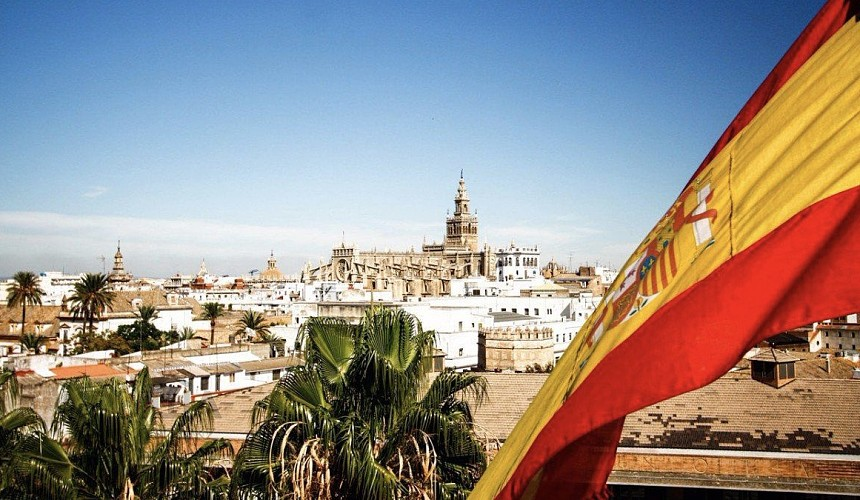
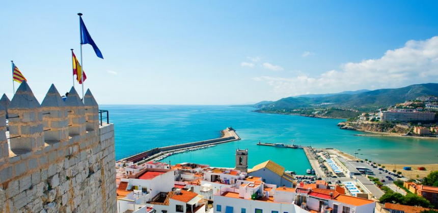
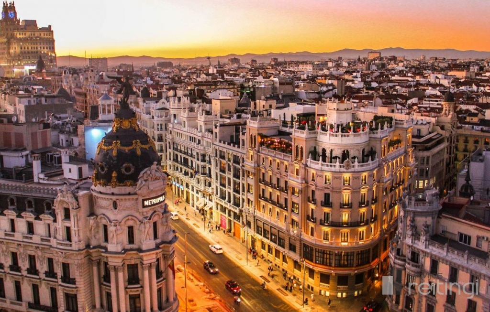
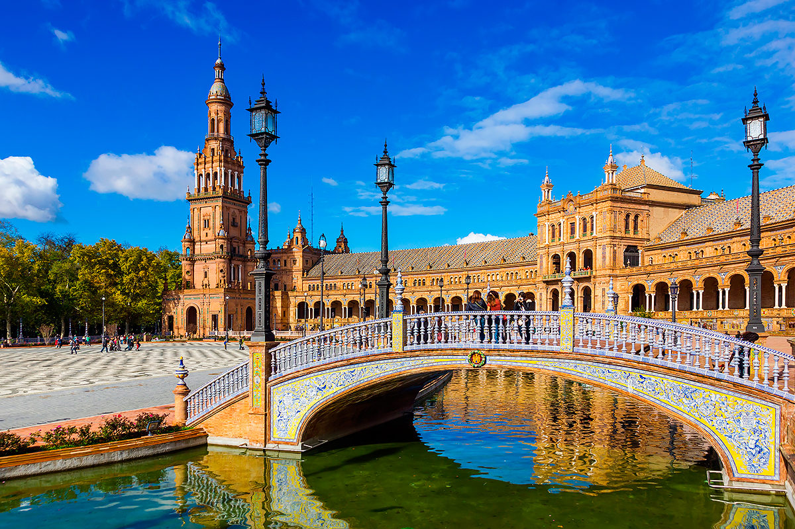

 Испания – европейская страна, расположенная на Пиренейском полуострове. Территория Испании разделена на 17 автономных регионов. В столице страны, Мадриде, находятся Королевский дворец и музей Прадо, где хранятся произведения европейских мастеров. В Сеговии можно посетить средневековый замок (Алькасар) и увидеть хорошо сохранившийся римский акведук. Барселона – столица автономного сообщества Каталония. Облик этого города определяют многочисленные причудливо-фантастические творения архитектора Антонио Гауди,среди которых храм Святого Семейства Член Европейского союза и НАТО. Испания занимает бо́льшую часть (80 %) Пиренейского полуострова, а также Канарские и Балеарские острова, имеет общую площадь 504 782 км², являясь четвёртой по величине страной в Европе (после России, Украины и Франции). Омывается Атлантическим океаном на севере и западе, Средиземным морем на юге и востоке. Средняя высота поверхности Испании — 650 м над уровнем моря; она является одной из самых гористых стран Европы. Граничит с Францией, Андоррой и Португалией. Территория разделена на 17 автономных сообществ и 2 автономных города. Столица — Мадрид.
| |
 | |
 |  | |